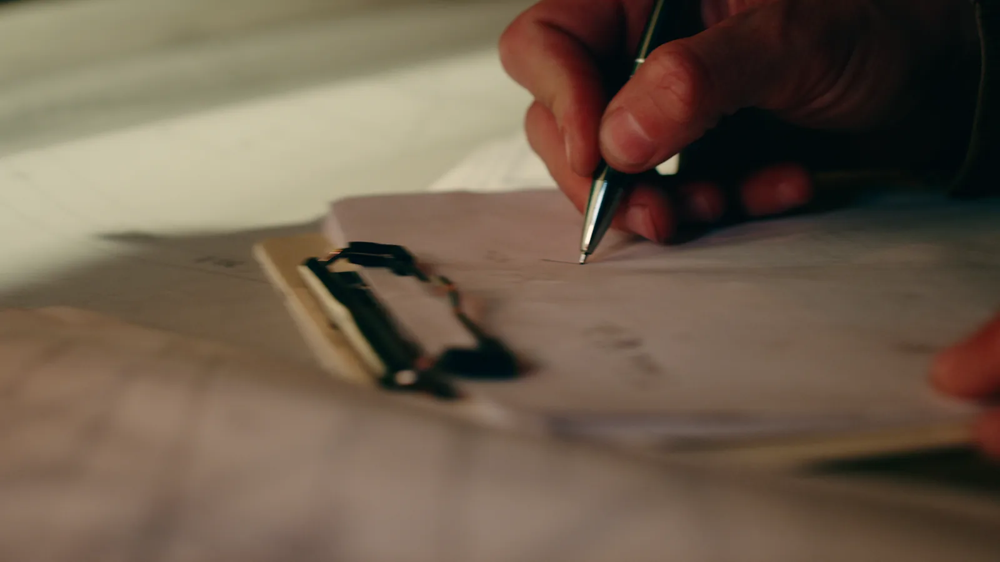
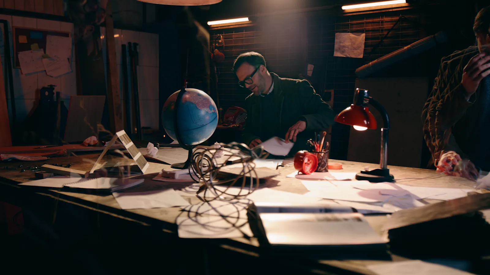
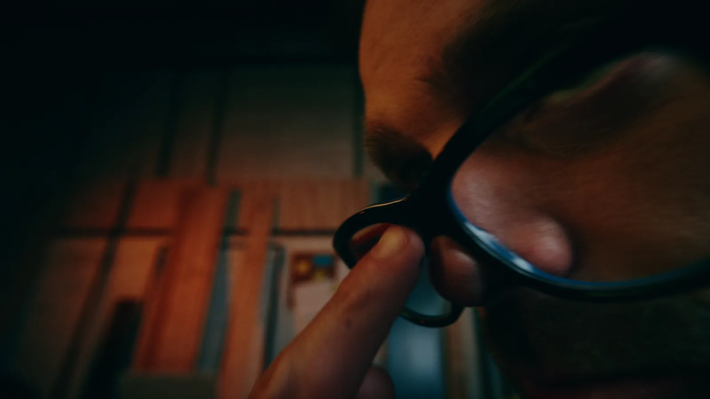
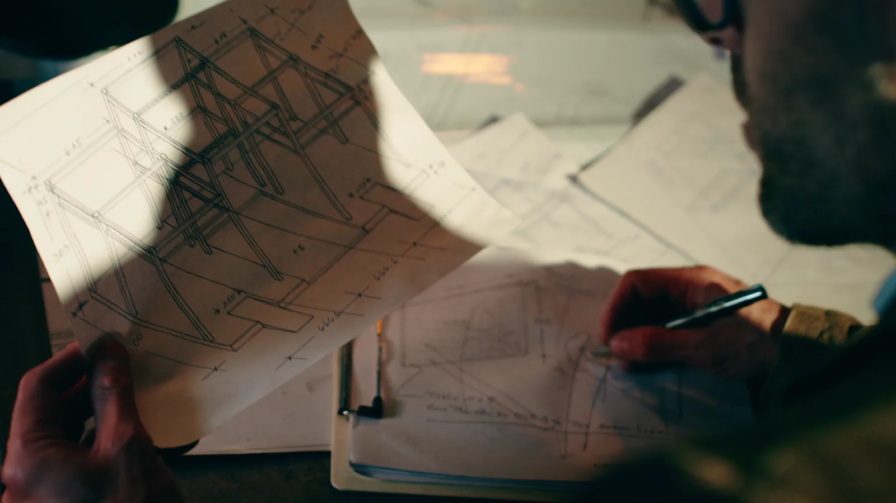
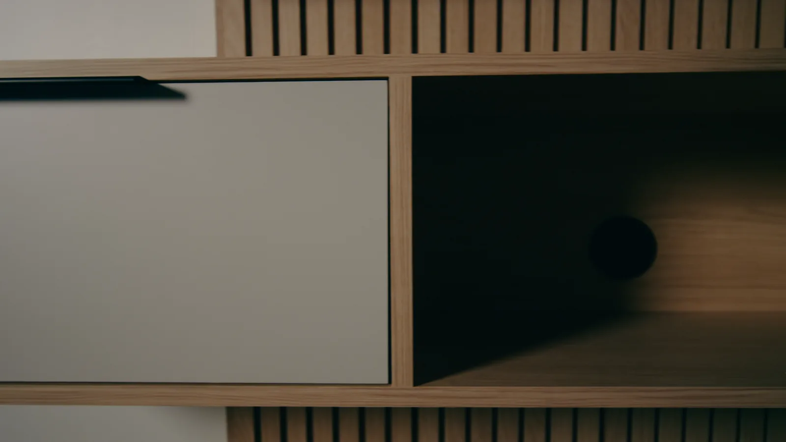
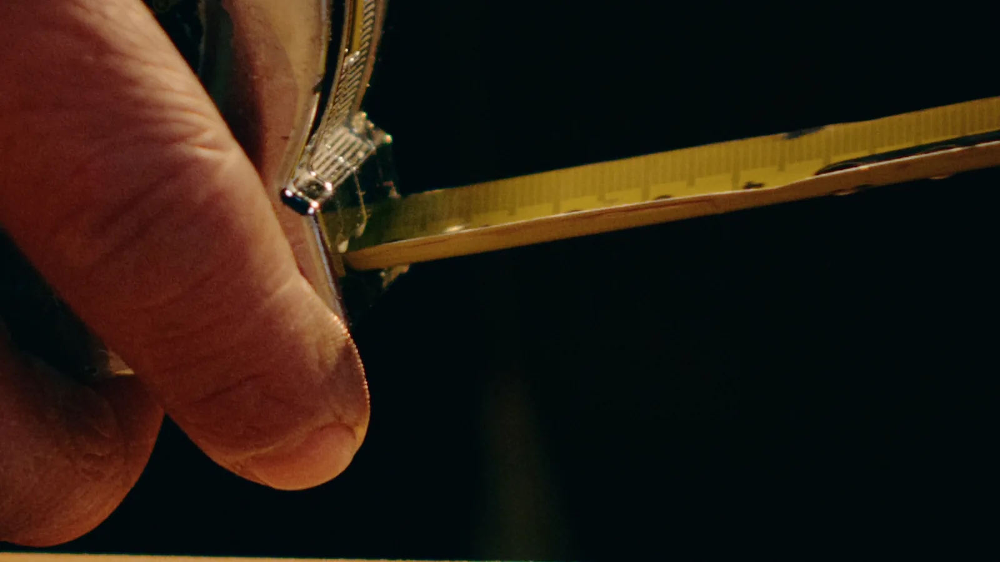
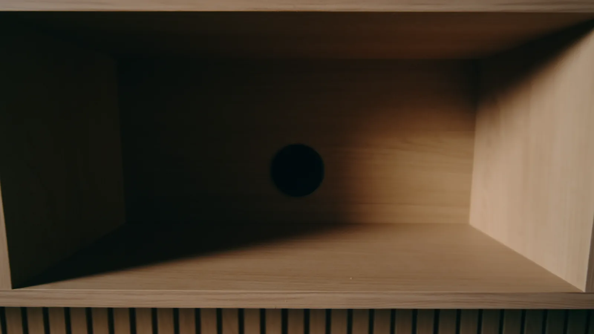
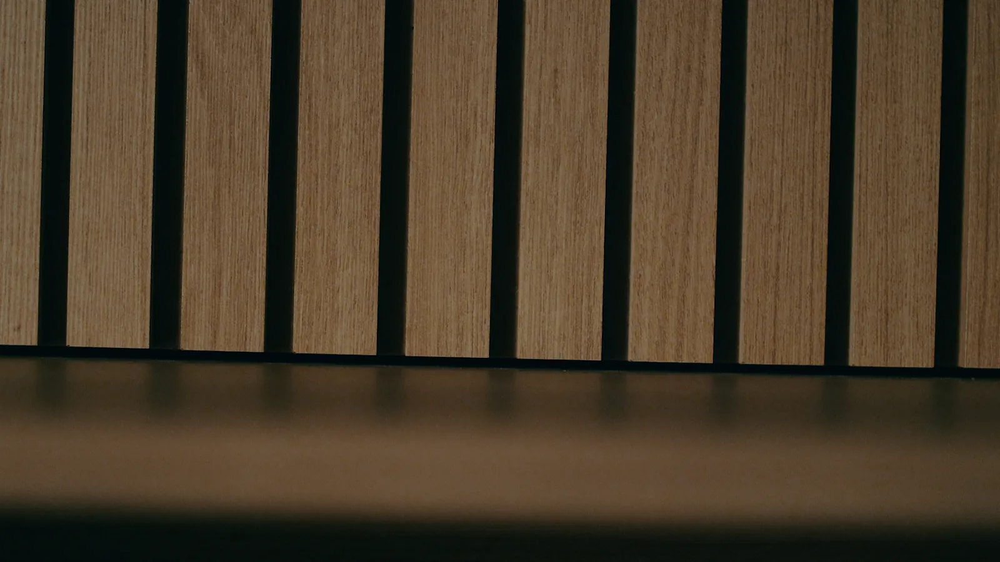
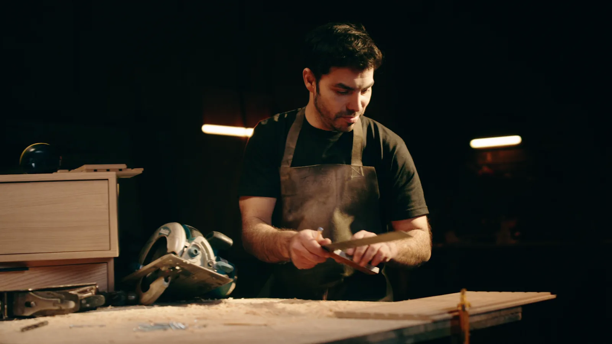

Un retrato del proceso artesanal detrás del diseño y la fabricación de mobiliario, desde los primeros trazos hasta el detalle de cada terminación.
Dirección & Montaje: Marco Hernández.
Dirección de Fotografía: Javier Santibañez.
Producción & Post: HS Studio.








